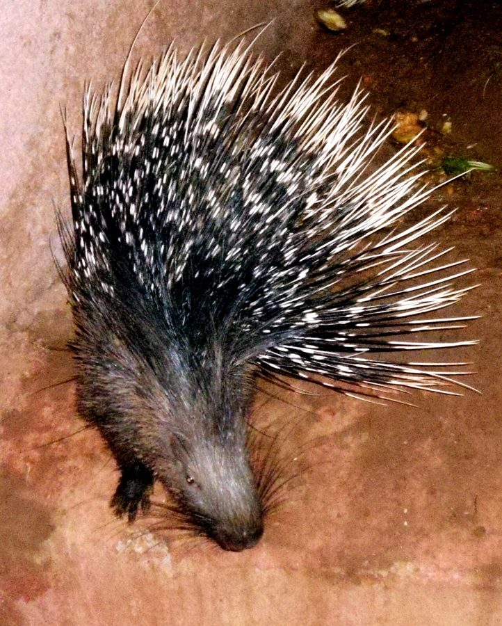

साहीIndian Crested Porcupine
Hystrix indica · Hystricidae · MAM-0008

- Scientific name
- Hystrix indica Kerr, 1792
- Family
- Hystricidae
- Hindi
- साही
- Status here
- native
- IUCN
- LC
When to look कब देखें
Present all year.
साही / Indian Porcupine
Hystrix indica Kerr, 1792 — Hystricidae
साही — पूर्वी उत्तर प्रदेश के ग्रामीण इलाकों और झाड़ियों में पाया जाने वाला एक बड़ा, अनोखा काँटेदार कृंतक (rodent) स्तनधारी। इसका पूरा पिछला हिस्सा लंबे, नुकीले काले-सफेद धारियों वाले कांटों (quills) से ढका रहता है, जो वास्तव में रूपांतरित बाल होते हैं। यह स्वभाव से शर्मीला और पूरी तरह से निशाचर (nocturnal) है, जो दिनभर अपने गहरे बिलों में छिपा रहता है। अपनी पूंछ के सिरे पर स्थित खोखले कांटों को हिलाकर यह खतरे की चेतावनी देने वाली खड़खड़ाहट पैदा करता है। खेतों में जड़ों और फसलों को खोदकर खाने के कारण यह किसानों के लिए एक चुनौती है, लेकिन इसके द्वारा खोदे गए बिल अन्य जीवों के लिए आश्रय बनते हैं।
Quick Identification त्वरित पहचान
| Feature | Description |
|---|---|
| Form | Large, heavy-bodied rodent with a stocky build and short, strong clawed limbs |
| Quills | Covered in long, sharp, rigid black-and-white banded quills (up to 30 cm long) on the back and tail |
| Crest | A prominent crest of long, thin, soft white-tipped bristles extending from the crown of the head to the upper back |
| Tail | Short, fitted with specialized short, hollow "rattle quills" at the tip that clatter when shaken |
| Activity | Strictly nocturnal; lives in deep, self-excavated underground burrow networks |
Field tip: A large rodent covered in long black-and-white striped spikes. It can be identified in the field without sightings by the presence of dropped quills or its unique clawed, four-toed footprints near canal banks and crop edges.
Morphology आकारिकी
Biometrics (typical measurements in northern Indian populations):
| Measurement | Range |
|---|---|
| Head-body length | 60–90 cm |
| Tail length | 8–15 cm |
| Weight | 8.0–18.0 kg |
Body: Stout, compact, and low-slung. The head, neck, and shoulders are covered in short, dark-brown or black bristles. A pronounced crest of long, thin white-tipped bristles runs from the crown of the head down the neck.
Quills: The back and flanks are covered in modified hairs known as quills.
- Primary quills: Long, thin, flexible, marked with alternating black and white bands (up to 30 cm long).
- Secondary quills: Shorter, thicker, and extremely rigid, ending in needle-sharp points.
- Defense: When threatened, the porcupine erects its quills, causing it to appear twice its size, and charges backward at the attacker. Contrary to myth, quills cannot be shot; rather, they detach easily when embedded in a predator.
Tail: Short and stubby. It features a cluster of hollow, capsule-like rattle quills that are vibrated together when threatened to produce a sharp, metallic clattering sound.
Ecological Role पारिस्थितिक भूमिका
Burrow creator. Hystrix indica is an excellent excavator. It digs deep, branching underground tunnels (up to 10 m long and 2 m deep). Abandoned porcupine burrows provide crucial shelter and thermal protection for jackals (Canis aureus, MAM-0005), monitor lizards (Varanus bengalensis, REP-0004), toads, and bats.
Soil modifier. Their extensive digging mixes soil layers, improves soil aeration, and increases water infiltration in dry habitats. However, they act as seed predators by consuming roots and bulbs.
Life Cycle / Phenology जीवन चक्र
- Social life: Live in family groups (monogamous pairs and offspring) sharing a single burrow system.
- Breeding: Breeding occurs year-round, peaking in spring (March–July).
- Gestation: About 240 days.
- Birth: The female gives birth to a litter of 1 to 3 pups in an underground nursery chamber lined with grass.
- Pup development: Pups are born with open eyes and soft, hair-like quills that harden into sharp spikes within a few days. They remain inside the burrow for the first 2–3 weeks.
Host Plants or Prey आहार
Primary food items:
- Underground bulbs, tubers, and roots of wild grasses.
- Agricultural crops: Potatoes, carrots, sweet potatoes, onions, ginger, and groundnuts.
- Ripe fallen fruits: Mango (Mangifera indica), Amla (Phyllanthus emblica, FLR-0033), and Mahua.
- Bark of young trees (chewed from the base).
- Bones (chewed in burrows to obtain calcium and sharpen incisors).
Predators / Natural Enemies शत्रु
- Leopards — The only large felids capable of hunting adult porcupines, using precise paw-strikes to flip the rodent and expose the soft belly.
- Pack-hunting Feral Dogs — Attack porcupines in the open near village boundaries.
- Humans — Targeted by farmers to protect crops, and hunted for meat in riverine areas.
Agricultural / Human Relevance कृषि प्रासंगिकता
Crop damage. Porcupines cause significant localized damage in Basti. They dig up root crops like potatoes and carrots, chewing the tubers. They also chew the bark of young orchard trees (girdling the trunk), which cuts off sap flow and kills the trees.
Infrastructure damage. Their deep burrows can undermine agricultural bunds, earthen canal banks, and forest roads, causing structural collapses during the monsoon rains.
Cultural significance. Quills are traditionally collected by children in rural UP. In historical times, the long hollow quills were used as writing pens (nibs) or for weaving traditional decorative items.
Expected Locally स्थानीय रूप से अपेक्षित
Not a field record. Written from published accounts for eastern Uttar Pradesh. No confirmed local sighting yet — if you have seen it, that is what the atlas needs.
अभी तक स्थानीय पुष्टि नहीं। यह विवरण प्रकाशित स्रोतों से है, किसी अवलोकन से नहीं।
Commonly found in rural areas of Basti district, especially along the banks of canals and drainage channels where the soil is soft and elevated, providing ideal burrowing sites. Due to their strictly nocturnal nature, they are rarely seen alive, but their dropped quills and the excavated soil mounds at burrow entrances are frequently observed.
Distribution वितरण
Global range: Native across Western and Southern Asia, from Turkey and Israel through Iran, Pakistan, India, Nepal, Bhutan, Bangladesh, to Sri Lanka.
In India: Distributed throughout the country, occupying dry deciduous forests, scrublands, rocky terrains, and agricultural plains.
In Uttar Pradesh: Common in all districts, particularly in the riverine tracts and rural margins.
In Basti district / eastern UP: Widespread in all rural blocks, especially active around root crop farms and riverine grasslands.
Range notes: No significant range changes documented.
Research Questions शोध प्रश्न
Anyone can investigate these | कोई भी इन प्रश्नों की जाँच कर सकता है
- How do porcupines select burrowing locations along Basti irrigation canals in relation to soil compaction? / साही मिट्टी के संघनन (कठोरता) के संबंध में बस्ती सिंचाई नहरों के किनारे बिल खोदने के स्थानों का चयन कैसे करते हैं? — Measure soil density at burrow entrances vs. adjacent banks.
- What is the ratio of potato crop damage in fields bordering riverine grass beds vs. fields near open roads? — Map and compare damage rates in 10 fields.
- How many active entrance holes exist in a single porcupine burrow complex in your village, and how are they oriented? / आपके गाँव में साही के एक बिल परिसर में कितने सक्रिय प्रवेश द्वार हैं, और उनकी दिशा क्या है? — Map entrance orientations.
- Does the barking of domestic dogs deter porcupines from entering village homestead gardens at night? — Record nightly visits in gardens with and without dogs.
- How long does it take for a girdled orchard tree to die after its bark is stripped by a porcupine? — Track tree health and healing rates over six months.
Similar Species मिलती-जुलती प्रजातियाँ
| Species | How to tell apart | हिंदी |
|---|---|---|
| Wild Boar (Sus scrofa) | Much larger mammal; body is covered in dark bristles rather than long quills; has hooves and a snout | जंगली सूअर — खुरों वाला बड़ा स्तनधारी |
| Indian Hedgehog (Paraechinus micropus) | Much smaller (under 25 cm); covered in short, thin spines; eats insects rather than roots | कांटेदार चूहा / झाऊ चूहा — छोटा कीटभक्षी |
Field rule: Large rodent body covered in long black-and-white banded quills, a crest of thin white bristles on the head, and tail tipped with hollow rattle quills, identify Hystrix indica.
Taxonomy & Classification वर्गीकरण
Original description. The Scottish writer and naturalist Robert Kerr described the species as Hystrix indica in 1792 in his translation The Animal Kingdom (Vol. 1, p. 262). The type locality is India. The genus name Hystrix is derived from the Greek hustrix (porcupine), meaning "spiny pig". The specific name indica refers to its native range in India.
Subspecies. Monotypic — no subspecies are currently recognised.
Family and order placement. Placed in the order Rodentia, suborder Hystricomorpha, family Hystricidae (Old World porcupines).
Phylogenetic notes. Hystrix indica is closely related to Hystrix cristata (African Crested Porcupine). It represents a highly specialized rodent lineage characterized by defensive quills and subterranean habits.
IUCN status rationale. Listed as Least Concern (LC). The species has a massive geographic distribution, occupies diverse habitats, and is highly resilient to agricultural development, with stable global populations.
Photo Gallery फोटो गैलरी
References संदर्भ
- Kerr, R. (1792). The Animal Kingdom, or zoological system of the celebrated Sir Charles Linnaeus. Vol. 1. William Creech, Edinburgh, p. 262.
- Prater, S.H. (1971). The Book of Indian Animals. Bombay Natural History Society, Mumbai.
- Pocock, R.I. (1939). The Fauna of British India, including Ceylon and Burma. Mammalia. Vol. 1. Taylor & Francis, London.
- Gurung, K.K. & Singh, R. (1996). Field Guide to the Mammals of the Indian Subcontinent. Academic Press, San Diego.
- Zoological Survey of India (ZSI) — Mammal Fauna of Uttar Pradesh.
- GBIF Occurrence Data — Hystrix indica, Uttar Pradesh (2010–2025).
Source file: species/fauna/mammals/indian_porcupine.md